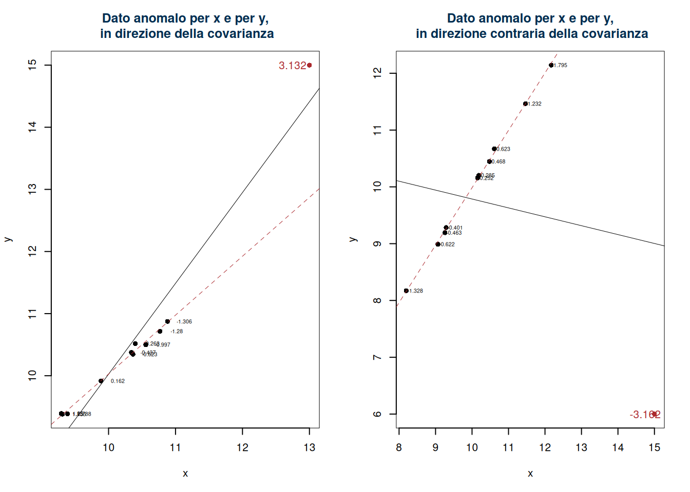
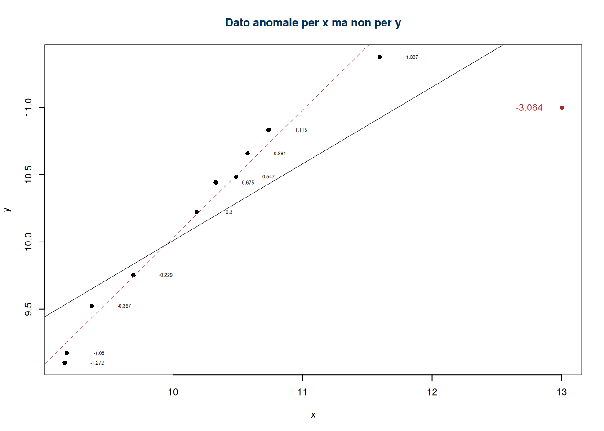
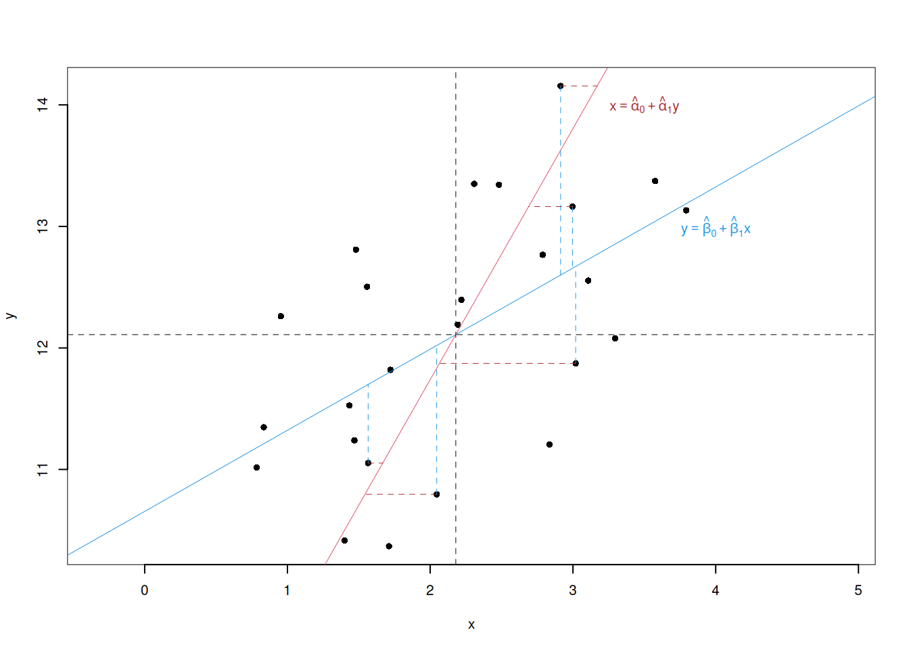

Capitolo 10 Inferenza: concetti introduttivi
Dalla Treccani si definisce l’atto di inferire come:
Trarre, partendo da una determinata premessa o dalla constatazione di un fatto, una conseguenza, un giudizio, una conclusione.
Inferire è un atto fondamentale non solo del pensiero umano, ma anche della vita stessa. Gran parte delle specie evolute possiede un istinto innato per trarre conclusioni a partire dall’osservazione dell’ambiente circostante. Che si tratti di un animale che associa il rumore di un predatore al pericolo o di una pianta che risponde agli stimoli luminosi per orientare la crescita, l’inferenza è una strategia essenziale per adattarsi e sopravvivere.
L’uomo, tuttavia, si distingue per un aspetto cruciale: la capacità di prendere coscienza di questo processo, di formalizzarlo e di costruirci sopra un linguaggio. La riflessione sull’inferenza, il tentativo di comprendere e replicare consapevolmente ciò che molte specie fanno istintivamente, ha dato origine a discipline come la logica, la matematica e, infine, la statistica. Studiando l’inferenza, l’uomo è riuscito a trasformare un’abilità naturale in un processo razionale, formale e comunicabile, che non solo migliora la comprensione del mondo, ma rende possibile la condivisione e la riproduzione di quel sapere.
Esistono diverse modalità di inferenza, che riflettono modi distinti di trarre conclusioni: deduttiva, induttiva diretta e induttiva inversa.
L’inferenza deduttiva, tipica della logica formale, parte da premesse certe per arrivare a conclusioni necessarie. È il tipo di ragionamento che governa la matematica: dati alcuni assunti iniziali, le conclusioni sono logicamente inevitabili e già contenute nelle premesse. Questo tipo di inferenza è deterministico e privo di incertezze.
L’inferenza induttiva diretta, invece, opera nel campo della probabilità. Partendo da un modello noto o da una distribuzione che descrive un fenomeno, permette di calcolare la probabilità di osservare determinati esiti. È il caso di un’urna dalla composizione nota: possiamo determinare con precisione la probabilità che un’estrazione casuale produca un certo risultato. Qui il ragionamento è incerto, ma il modello è dato a priori e costituisce la base delle conclusioni.
L’inferenza induttiva inversa, oggi conosciuta come inferenza statistica, ribalta questa prospettiva. Non ci si chiede quali osservazioni aspettarsi da un modello noto, ma quale modello, quali parametri o quali proprietà della popolazione possano spiegare i dati osservati. È il problema dell’urna dalla composizione incognita: data una serie di estrazioni, come possiamo inferire la composizione complessiva? Questo tipo di inferenza è intrinsecamente probabilistico e dipende fortemente dal contesto e dalle ipotesi di partenza.
Ciò che rende l’inferenza statistica così straordinaria è proprio la sua capacità di trasformare osservazioni parziali, influenzate dal caso, in una comprensione più ampia e generalizzabile. Ma ciò che la rende possibile è il linguaggio formale che l’uomo ha costruito per descriverla. Questo linguaggio non solo rende espliciti i passaggi impliciti del ragionamento, ma permette di comunicare e replicare i risultati, superando i limiti del contesto individuale.
In definitiva, l’inferenza statistica è l’espressione più raffinata di una capacità condivisa con molte specie, ma che l’uomo ha elevato a strumento consapevole e rigoroso. Essa rappresenta un ponte tra l’istinto naturale e la razionalità formale, dimostrando come un processo profondamente radicato nella biologia possa essere trasformato in un metodo universale per comprendere il mondo.
Per comprendere la differenza tra inferenza induttiva diretta e inversa, consideriamo il classico esempio di un’urna contenente bussolotti di due colori: rosso e blu.
10.1 Inferenza da popolazioni finite
Le popolazioni finite rappresentano il contesto più vicino all’intuizione comune. Si tratta di insiemi chiusi e completamente enumerabili di unità, come le persone registrate in un censimento o gli studenti iscritti a un corso. In questi casi, ogni elemento della popolazione può essere associato a una lista, e il campione rappresenta una frazione precisa della popolazione. Questo contesto è tipico delle statistiche ufficiali, come quelle prodotte dall’ISTAT, dall’Eurostat e dall’OCSE.
L’inferenza da popolazioni finite è quindi apparentemente intuitiva, ma richiede un impianto operativo articolato: occorre disporre di un registro completo della popolazione, progettare un disegno di campionamento adatto (spesso stratificato o a più stadi), costruire e testare strumenti di rilevazione standardizzati (come questionari), e garantire qualità e controllo dei dati raccolti. Si tratta di operazioni costose e complesse, che solo istituzioni pubbliche di grande dimensione e con mandato istituzionale riescono a realizzare su scala nazionale o internazionale.
Ecco alcuni esempi concreti di indagini campionarie su popolazioni finite:
L’Indagine sulle forze di lavoro (ISTAT) ha l’obiettivo di stimare il tasso di occupazione, disoccupazione e inattività della popolazione residente in Italia. La popolazione di riferimento è costituita da tutte le persone residenti in famiglie, escluse le collettività. L’indagine è continua e si basa su un campione a rotazione di circa 77.000 famiglie ogni trimestre, selezionate casualmente. I questionari raccolgono informazioni su attività lavorativa, ricerca di lavoro, orari, contratti e condizioni lavorative.
L’Indagine sui consumi delle famiglie (ISTAT) rileva le spese sostenute per beni e servizi, allo scopo di descrivere i comportamenti di consumo e aggiornare il paniere per l’indice dei prezzi. La popolazione è costituita dalle famiglie residenti in Italia, e il campione include oltre 30.000 famiglie distribuite lungo l’anno. Le famiglie selezionate devono compilare un diario giornaliero delle spese e rispondere a interviste dettagliate, il che rende l’indagine particolarmente impegnativa.
L’indagine EU-SILC (coordinata da Eurostat, realizzata in Italia da ISTAT) fornisce informazioni su redditi, condizioni abitative, povertà e disuguaglianza. La popolazione è costituita dalle famiglie residenti nei paesi europei. In Italia, il campione supera le 20.000 famiglie, con interviste condotte annualmente e in parte replicate su base panel. I questionari sono armonizzati a livello europeo per consentire il confronto tra paesi.
L’indagine PIAAC (OCSE) valuta le competenze fondamentali degli adulti tra i 16 e i 65 anni, in particolare la capacità di comprendere testi, usare strumenti numerici e risolvere problemi. In Italia, la popolazione campionata è estratta dai registri anagrafici e comprende circa 5.000 individui. Le interviste includono sia un modulo socio-demografico sia prove individuali computerizzate, somministrate in centri di test.
L’indagine TALIS (OCSE) raccoglie informazioni sulle condizioni di lavoro degli insegnanti e dei dirigenti scolastici, esplorando aspetti come la formazione, la soddisfazione professionale, le pratiche didattiche e il clima scolastico. La popolazione di riferimento è costituita dagli insegnanti delle scuole secondarie inferiori. Anche qui il campione è probabilistico e i questionari, somministrati in modo standardizzato, permettono confronti tra paesi.
Queste analisi si basano su campioni estratti da popolazioni note e completamente enumerate. Il disegno campionario, il calcolo dei pesi e l’analisi dei dati tengono esplicitamente conto della struttura finita della popolazione e della complessità del piano di campionamento. La qualità dell’inferenza dipende in larga parte dalla precisione con cui questi aspetti sono progettati e implementati.
10.2 Inferenza da popolazioni infinite
Nel lavoro statistico reale, capita spesso di trovarsi in contesti in cui la popolazione non è elencabile né finita, o non è nemmeno definibile in modo operativo. In questi casi si adotta un approccio diverso: si assume che i dati osservati derivino da una popolazione concettualmente infinita, e si modellano come realizzazioni di una variabile aleatoria. Si tratta di una rappresentazione idealizzata, ma estremamente potente e spesso necessaria per dare senso e struttura all’analisi dei dati.
Esempi classici includono:
- Processi fisici e ambientali, come il livello di un fiume, la temperatura media di una regione, o la concentrazione di un inquinante nell’aria. Non possiamo elencare tutti i valori possibili, né osservare tutti i momenti futuri: costruiamo un modello e lavoriamo con i dati come se fossero campioni da una variabile continua.
- Processi industriali e produttivi, in cui i pezzi prodotti in futuro non esistono ancora, ma si assume che seguano la stessa legge dei pezzi già osservati.
- Eventi ripetibili, come lanci di monete, click su un sito o richieste a un server: non ci interessa una popolazione finita, ma una regolarità stocastica nel lungo periodo.
- Sperimentazioni controllate, come i clinical trials, in cui si valuta l’efficacia di un farmaco o di una terapia. La popolazione di riferimento è concettualmente infinita (tutti i possibili pazienti), e si ipotizza che l’effetto del trattamento segua una distribuzione probabilistica.
- Psicologia sperimentale e scienze comportamentali, dove si testano ipotesi su preferenze, scelte, reazioni, sotto vincoli controllati. Anche in questi casi, si modellano le risposte come esiti stocastici, spesso su scala continua o discreta.
- Economia sperimentale, in cui si studiano decisioni individuali o interazioni strategiche (come giochi o aste) in laboratorio. I dati sono trattati come osservazioni da una popolazione astratta, con l’obiettivo di descrivere regolarità comportamentali generalizzabili.
Anche quando i dati provengono da una popolazione finita, può essere utile (o necessario) adottare il punto di vista modellistico, trattando i dati come esiti casuali di un esperimento teorico. È una scelta metodologica che consente di rispondere a domande su effetti, relazioni, rischi, scenari ipotetici.
10.3 Inferenza non parametrica e inferenza parametrica
Una volta accettato il quadro modellistico, si aprono due grandi strade a seconda del grado di struttura imposto al modello probabilistico:
Nell’inferenza non parametrica (o distribution-free), si assume solo che le osservazioni siano i.i.d. (indipendenti e identicamente distribuite), ma non si specifica la forma della distribuzione. L’obiettivo è stimare quantità come media, mediana o varianza con il minimo numero di ipotesi. È un approccio flessibile, adatto a situazioni esplorative o con pochi dati.
Nell’inferenza parametrica, si ipotizza che i dati seguano una certa famiglia di distribuzioni (ad esempio normale, binomiale, esponenziale…), a meno di pochi parametri ignoti. Questo approccio consente di ottenere inferenze più precise, stimare probabilità di eventi complessi e costruire modelli predittivi, a patto che l’ipotesi sul modello sia ragionevole.
Esempi realistici: - Un gestore del traffico può usare un modello di Poisson per stimare la probabilità che un incrocio abbia più di 10 auto in coda a mezzogiorno. - Un epidemiologo può usare un modello binomiale per stimare la probabilità che almeno 3 persone in un piccolo gruppo siano infette. - Un analista può stimare la mediana del tempo di percorrenza su una tratta, senza assumere nulla sulla forma della distribuzione: in questo caso si opera in ambito non parametrico.
L’adozione di un modello più o meno strutturato comporta sempre un compromesso tra generalità e precisione: meno ipotesi permettono maggiore robustezza, ma richiedono strumenti più cauti; più ipotesi rendono le conclusioni più forti, ma più sensibili a eventuali deviazioni dalla realtà.
10.4 Sintesi dei contesti
Questa classificazione dei contesti di inferenza aiuta a chiarire il tipo di domande che lo statistico può affrontare. Mentre l’inferenza da popolazioni finite si concentra su contesti pratici e limitati, tipici delle statistiche ufficiali, l’inferenza da popolazioni infinite e da modelli probabilistici consente di affrontare problemi più astratti e complessi, con applicazioni che spaziano dalla scienza alla finanza, dall’industria alla ricerca sperimentale.
10.5 Dalle popolazioni ai modelli: la metafora dell’urna
Per fissare le idee sui diversi schemi inferenziali che incontreremo nel corso, possiamo fare ricorso alla metafora dell’urna, già utilizzata nello studio della probabilità. In ciascun caso, l’urna rappresenta un meccanismo stocastico, idealmente realizzabile o puramente concettuale, da cui si ottengono osservazioni mediante un campionamento probabilistico. La metafora non suggerisce un’applicazione, ma si concentra sul meccanismo probabilistico alla base di ciascun tipo di inferenza.
10.5.1 Campionamento da un’urna di dimensione nota, senza reinserimento (popolazioni finite)
Un’urna contiene \(N = 100\) bussolotti, un numero ignoto \(R\) di rossi e \(B = N - R\) bianchi. Vengono estratti \(n = 10\) bussolotti senza reinserimento, e si osservano \(s = 6\) bianchi.
Domanda inferenziale:
Quanti bussolotti bianchi sono contenuti nell’urna? Possiamo stimare \(B\), o almeno approssimare un intervallo plausibile per la proporzione \(\frac{B}{N}\)?
10.5.2 Campionamento da un’urna a composizione ignota, con reinserimento (popolazioni infinite, modello binomiale)
L’urna ha una composizione fissa ma ignota: una proporzione \(\pi\) di bianchi e \(1 - \pi\) di rossi. Si eseguono \(n = 10\) estrazioni con reinserimento, e si osservano \(s = 6\) bianchi.
Domanda inferenziale:
Qual è la stima di \(\pi\), cioè della proporzione di bianchi nell’urna? Possiamo fornire un intervallo credibile per \(\pi\), sulla base del campione osservato?
10.5.3 Campionamento da un’urna che genera numeri reali con legge ignota (popolazioni infinite, inferenza non parametrica)
L’urna genera numeri reali, secondo una distribuzione ignota. Si estraggono \(n = 10\) valori:
\(X = \{2.3,\ 1.8,\ 3.1,\ 2.6,\ 2.0,\ 2.5,\ 2.9,\ 1.7,\ 2.1,\ 2.4\}\)
con media campionaria \(\bar{x} = 2.34\) e varianza campionaria \(s^2 = 0.19\).
Domande inferenziali:
Cosa possiamo concludere sul valore medio \(\mu\) della distribuzione da cui provengono questi dati? E sulla variabilità \(\sigma^2\)?
Quali margini di incertezza sono associati a queste stime, pur non conoscendo la forma della distribuzione?
10.5.4 Campionamento da un’urna che genera conteggi secondo un modello di Poisson (popolazioni infinite, inferenza parametrica discreta)
L’urna genera conteggi secondo una legge di Poisson con parametro \(\lambda\) ignoto. Si osservano
\(Y = \{3,\ 1,\ 2,\ 4,\ 2,\ 0,\ 1,\ 3,\ 2,\ 1\}\)
con media campionaria \(\bar{y} = 1.9\).
Domanda inferenziale:
Possiamo stimare il tasso medio \(\lambda\)? Quanto è plausibile che il valore vero di \(\lambda\) sia maggiore di 2? Quale margine di errore possiamo associare alla stima ottenuta?
10.5.5 Campionamento da un’urna che genera valori reali secondo una distribuzione normale
(popolazioni infinite, inferenza parametrica continua)
L’urna genera numeri reali secondo una distribuzione normale \(\mathcal{N}(\mu, \sigma^2)\). Si osservano:
$
Violazione dell’assunto 0 (i punti provengono da una relazione lineare)
Violazione degli assunti 2. e 4. (omoschedasticità e indipendenza tra \(x\) e \(\varepsilon\))
Violazione dell’assunto 3. (indipendenza gli \(\varepsilon\))
Violazioni dell’assunto 6. (normalità dei residui)
Per diagnosticare se i residui provengono da una normale ci sono diverse tecniche. Per esempio l’istogramma dei residui: si costruisce l’istogramma di frequenza e lo si compara con la normale. Se gli assunti sono rispettati ci aspetteremmo una situazione del genere
Esempio di assunto non rispettato
10.5.6 Normal QQ plot
Si tratta di un grafico che mette sull’asse delle x i quantile (percentili in inglese) teorici della normale e in ordinata i quantile osservati dei residui sul campione.
Si crea una tabella dei percentili degli \(\hat\varepsilon_{(1)}\)
| errori ordinati | ordine del percentile | percentile teorico |
|---|---|---|
| \(\hat\varepsilon_{(1)}\) | \(1/n\) | \(z_{1/n}\) |
| \(\hat\varepsilon_{(2)}\) | \(2/n\) | \(z_{2/n}\) |
| \(...\) | \(...\) | \(...\) |
dove \(z_{i/n}\) è il percentile di un \(Z\sim N(0,1)\): \[z_{i/n}: P(Z\leq z_{i/n})=i/n\]
Se le \(z_{i/n}\) e le \(\hat\varepsilon_i\) giacciono su una retta, allora gli errori si possono assumere normali, tanto più i punti si allontanano tanto più l’ipotesi è violata.
10.6 Punti di leva, Outliers e punti influenti
Ci sono tre tipi di dati anomali, in particolare
- Outlier: osservazione con residuo anomale (sulle \(y\))
- Leverage: (punto di leva), valore anomalo (sulle \(x\))
- Influence Points: (punti influenti) osservazioni con comportamento anomalo che influenzano notevolmente i risultati
10.6.1 Punti di leva
Possiamo misurare la distanza di ogni singola \(x_i\) dalla propria media \(\bar x\) con la seguente misura chiamata leva \[ h_{i} = \frac{1} {n} + \frac{(x_{i} - \bar{x})^{2}} {n \hat\sigma_{X}^{2}} \]
Valori di \(x\) con indice di leva alto sono lontani dal centro. In particolare se \[h_i>\frac 2 n\] allora \(x_i\) è un punto di leva. I Punti di leva possono avere effetto sul calcolo dei coefficienti di regressione. I punti a alta leva (con \(h_{i} > 2/n\)) sono nei valori estremi della variabile esplicativa e sono potenzialmente influenti, nel senso che possono influenzare in misura rilevante la pendenza della RdR. Infatti, i punti di leva possono portare a risultati forvianti per esempio
| \(x_i\) | 0.00 | 0.00 | 0.00 | 0.0 | 0.00 | 0.00 | 0.00 | 0.00 | 0.00 | 0.00 | 1.0 |
| \(y_i\) | 19.37 | 20.18 | 19.16 | 21.6 | 20.33 | 19.18 | 20.49 | 20.74 | 20.58 | 19.69 | 21.5 |
| \(h_i\) | 0.10 | 0.10 | 0.10 | 0.1 | 0.10 | 0.10 | 0.10 | 0.10 | 0.10 | 0.10 | 1.0 |
Ma non sempre un punto a leva alta è un punto influente
| \(x_i\) | 9.37 | 10.18 | 9.16 | 11.60 | 10.33 | 9.18 | 10.49 | 10.74 | 10.58 | 9.69 | 15.00 |
| \(y_i\) | 10.13 | 10.38 | 8.85 | 10.49 | 10.89 | 9.16 | 10.48 | 11.21 | 10.99 | 9.99 | 14.50 |
| \(h_i\) | 0.14 | 0.10 | 0.16 | 0.13 | 0.09 | 0.16 | 0.09 | 0.09 | 0.09 | 0.12 | 0.82 |
10.6.2 I residui Studentizzati
La studentizzazione è una specie di standardizzazione nella quale si tiene conto anche dei valori di leva. I residui studentizzati sono dati da: \[ \tilde{\varepsilon}_{i} = \frac{\hat{\varepsilon}_{i}}{S_{\varepsilon} \sqrt{1 - h_{i}}} \sim t_{n-2} \]
Si preferiscono i residui studentizzati perché incorporano le leve e sono più confrontabili. La distribuzione è \(t\) con \(n-2\) gradi di libertà, se per qualche \(i\), \(|\tilde{\varepsilon}_{i}|>t_{\alpha;n-2}\) allora siamo in presenza di punti anomali che diventano punti influenti per il calcolo di \(\hat\beta_0\) e\(\hat\beta_1\).
Esempi

Esempio numerico
| \(x_i\) | 9.37 | 10.18 | 9.16 | 11.60 | 10.33 | 9.18 | 10.49 | 10.74 | 10.58 | 9.69 | 13.00 |
| \(y_i\) | 9.52 | 10.22 | 9.10 | 11.37 | 10.44 | 9.18 | 10.49 | 10.83 | 10.66 | 9.75 | 11.00 |
| \(h_i\) | 0.17 | 0.09 | 0.21 | 0.20 | 0.09 | 0.20 | 0.09 | 0.10 | 0.09 | 0.13 | 0.62 |
| \(\tilde\varepsilon_i\) | -0.37 | 0.30 | -1.27 | 1.34 | 0.68 | -1.08 | 0.55 | 1.11 | 0.88 | -0.23 | -3.06 |

10.7 Relazione tra \(Y|X\) e \(X|Y\)
Fin’ora abbiamo considerato il modello \[y_i = \beta_0+\beta_1+\varepsilon_i\]
Supponiamo di invertire il ruolo della \(x\) con la \(y\) \[x_i = \alpha_0+\alpha_1y_i+\delta_i\]
Le stime dei minimi quadrati sono analoghe \[ \begin{aligned} \hat\beta_1 &=\frac{\text{cov}(x,y)}{\hat\sigma_X^2} & \hat\alpha_1 &=\frac{\text{cov}(x,y)}{\hat\sigma_Y^2}\\ \hat\beta_0&=\bar y-\hat\beta_1\bar x & \hat\alpha_0 &=\bar x-\hat\alpha_1\bar y \end{aligned} \]
In generale \[\hat\beta_0\neq\hat\alpha_0,\qquad\hat\beta_1\neq\hat\alpha_1\]
In particolare \[\hat\beta_1=\hat\alpha_1, \text{ se e solo se }\hat\sigma_X^2=\hat\sigma_Y^2\]
Mentre \[\hat\beta_0=\hat\alpha_0, \text{ se e solo se }\hat\beta_1=\hat\alpha_1, \text{ e se }\bar y=\bar x\]
10.7.1 Relazione tra gli \(\alpha\) i \(\beta\) ed \(r\)
Essendo: \[\begin{eqnarray*} \hat\beta_1 &=&\frac{\text{cov}(x,y)}{\hat\sigma_X^2}\\ \hat\beta_1 &=&\frac{\hat\sigma_Y}{\hat\sigma_Y}\frac{\text{cov}(x,y)}{\hat\sigma_X^2}\\ \hat\beta_1 &=&\frac{\hat\sigma_Y}{\hat\sigma_X}\frac{\text{cov}(x,y)}{\hat\sigma_Y\hat\sigma_X}\\ \hat\beta_1 &=&\frac{\hat\sigma_Y}{\hat\sigma_X}r \end{eqnarray*}\]
Quindi: \[\begin{eqnarray*} \hat\alpha_1 &=&\frac{\text{cov}(x,y)}{\hat\sigma_Y^2}\\ \hat\alpha_1 &=&\frac{\hat\sigma_X}{\hat\sigma_Y}r \end{eqnarray*}\]
Graficamente

10.7.2 Regressione sulle variabili standardizzate
Se standardizziamo sia \(x\) che \(y\), otteniamo \[z_{Xi}=\frac{x_i-\bar x}{\hat\sigma_X}\qquad z_{Yi}=\frac{y_i-\bar y}{\hat\sigma_Y}\]
Abbiamo eliminato l’unità di misura sia da \(x\) che da \(y\) e centrato la nube dei dati
I dati standardizzati hanno media zero e varianza 1 \[\begin{aligned} \frac 1 n \sum_{i=1}^n z_{Xi} &=0 & \frac 1 n \sum_{i=1}^n z_{Xi}^2 &=1\\ \frac 1 n \sum_{i=1}^n z_{Yi} &=0 & \frac 1 n \sum_{i=1}^n z_{Yi}^2 &=1\\ \end{aligned} \]
Dalle proprietà del coefficiente di correlazione \[r_{Z_X,Z_Y}=r_{X,Y}=r\]
E dunque \[\begin{aligned} r &=\frac{\text{cov}(z_X,z_Y)}{\hat\sigma_{Z_X}\hat\sigma_{Z_Y}}\\ &= \frac{\text{cov}(z_X,z_Y)}{1\times 1}\\ &= \text{cov}(z_X,z_Y) \end{aligned} \]
Si considerino i due modelli \[z_{Yi}=\beta_{0Z}+\beta_{1Z}\cdot z_{Xi}+\varepsilon_{Zi}, \qquad z_{Xi}=\alpha_{0Z}+\alpha_{1Z}\cdot z_{Yi}+\delta_{Zi}\]
Allora \[\begin{aligned} \hat\beta_{1Z} &=\frac{\text{cov}(z_X,z_Y)}{\hat\sigma^2_{Z_X}} & \hat\alpha_{1Z} &=\frac{\text{cov}(z_X,z_Y)}{\hat\sigma^2_{Z_Y}}\\ &=\frac{r}{1^2}=r & &=\frac{r}{1^2}=r\\ \hat\beta_{0Z} &=\bar z_{Y} - \hat\beta_{1Z} \bar z_X &\hat\alpha_{0Z} &=\bar z_X - \hat\alpha_{1Z} \bar z_Y\\ &= 0 + r \cdot 0 =0 & &= 0 + r \cdot 0 =0 \end{aligned} \]
Graficamente